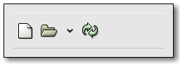

| GTK+ Reference Manual |
|---|
GtkToolbarGtkToolbar — Create bars of buttons and other widgets |  |
#include <gtk/gtk.h>
GtkToolbar;
enum GtkToolbarChildType;
enum GtkToolbarSpaceStyle;
GtkToolbarChild;
GtkWidget* gtk_toolbar_new (void);
void gtk_toolbar_insert (GtkToolbar *toolbar,
GtkToolItem *item,
gint pos);
gint gtk_toolbar_get_item_index (GtkToolbar *toolbar,
GtkToolItem *item);
gint gtk_toolbar_get_n_items (GtkToolbar *toolbar);
GtkToolItem* gtk_toolbar_get_nth_item (GtkToolbar *toolbar,
gint n);
gint gtk_toolbar_get_drop_index (GtkToolbar *toolbar,
gint x,
gint y);
void gtk_toolbar_set_drop_highlight_item
(GtkToolbar *toolbar,
GtkToolItem *tool_item,
gint index_);
void gtk_toolbar_set_show_arrow (GtkToolbar *toolbar,
gboolean show_arrow);
void gtk_toolbar_set_orientation (GtkToolbar *toolbar,
GtkOrientation orientation);
void gtk_toolbar_set_tooltips (GtkToolbar *toolbar,
gboolean enable);
void gtk_toolbar_unset_icon_size (GtkToolbar *toolbar);
gboolean gtk_toolbar_get_show_arrow (GtkToolbar *toolbar);
GtkOrientation gtk_toolbar_get_orientation (GtkToolbar *toolbar);
GtkToolbarStyle gtk_toolbar_get_style (GtkToolbar *toolbar);
GtkIconSize gtk_toolbar_get_icon_size (GtkToolbar *toolbar);
gboolean gtk_toolbar_get_tooltips (GtkToolbar *toolbar);
GtkReliefStyle gtk_toolbar_get_relief_style (GtkToolbar *toolbar);
GtkWidget* gtk_toolbar_append_item (GtkToolbar *toolbar,
const char *text,
const char *tooltip_text,
const char *tooltip_private_text,
GtkWidget *icon,
GtkSignalFunc callback,
gpointer user_data);
GtkWidget* gtk_toolbar_prepend_item (GtkToolbar *toolbar,
const char *text,
const char *tooltip_text,
const char *tooltip_private_text,
GtkWidget *icon,
GtkSignalFunc callback,
gpointer user_data);
GtkWidget* gtk_toolbar_insert_item (GtkToolbar *toolbar,
const char *text,
const char *tooltip_text,
const char *tooltip_private_text,
GtkWidget *icon,
GtkSignalFunc callback,
gpointer user_data,
gint position);
void gtk_toolbar_append_space (GtkToolbar *toolbar);
void gtk_toolbar_prepend_space (GtkToolbar *toolbar);
void gtk_toolbar_insert_space (GtkToolbar *toolbar,
gint position);
GtkWidget* gtk_toolbar_append_element (GtkToolbar *toolbar,
GtkToolbarChildType type,
GtkWidget *widget,
const char *text,
const char *tooltip_text,
const char *tooltip_private_text,
GtkWidget *icon,
GtkSignalFunc callback,
gpointer user_data);
GtkWidget* gtk_toolbar_prepend_element (GtkToolbar *toolbar,
GtkToolbarChildType type,
GtkWidget *widget,
const char *text,
const char *tooltip_text,
const char *tooltip_private_text,
GtkWidget *icon,
GtkSignalFunc callback,
gpointer user_data);
GtkWidget* gtk_toolbar_insert_element (GtkToolbar *toolbar,
GtkToolbarChildType type,
GtkWidget *widget,
const char *text,
const char *tooltip_text,
const char *tooltip_private_text,
GtkWidget *icon,
GtkSignalFunc callback,
gpointer user_data,
gint position);
void gtk_toolbar_append_widget (GtkToolbar *toolbar,
GtkWidget *widget,
const char *tooltip_text,
const char *tooltip_private_text);
void gtk_toolbar_prepend_widget (GtkToolbar *toolbar,
GtkWidget *widget,
const char *tooltip_text,
const char *tooltip_private_text);
void gtk_toolbar_insert_widget (GtkToolbar *toolbar,
GtkWidget *widget,
const char *tooltip_text,
const char *tooltip_private_text,
gint position);
void gtk_toolbar_set_style (GtkToolbar *toolbar,
GtkToolbarStyle style);
GtkWidget* gtk_toolbar_insert_stock (GtkToolbar *toolbar,
const gchar *stock_id,
const char *tooltip_text,
const char *tooltip_private_text,
GtkSignalFunc callback,
gpointer user_data,
gint position);
void gtk_toolbar_set_icon_size (GtkToolbar *toolbar,
GtkIconSize icon_size);
void gtk_toolbar_remove_space (GtkToolbar *toolbar,
gint position);
void gtk_toolbar_unset_style (GtkToolbar *toolbar);
"orientation" GtkOrientation : Read / Write "show-arrow" gboolean : Read / Write "toolbar-style" GtkToolbarStyle : Read / Write
"button-relief" GtkReliefStyle : Read "internal-padding" gint : Read "shadow-type" GtkShadowType : Read "space-size" gint : Read "space-style" GtkToolbarSpaceStyle : Read
"focus-home-or-end" gboolean user_function (GtkToolbar *toolbar, gboolean focus_home, gpointer user_data); "move-focus" gboolean user_function (GtkToolbar *toolbar, GtkDirectionType dir, gpointer user_data); "orientation-changed" void user_function (GtkToolbar *toolbar, GtkOrientation orientation, gpointer user_data); "popup-context-menu" gboolean user_function (GtkToolbar *toolbar, gint x, gint y, gint button, gpointer user_data); "style-changed" void user_function (GtkToolbar *toolbar, GtkToolbarStyle style, gpointer user_data);
A toolbar is created with a call to gtk_toolbar_new().
A toolbar can contain instances of a subclass of GtkToolItem. To add a GtkToolItem to the a toolbar, use gtk_toolbar_insert(). To remove an item from the toolbar use gtk_container_remove(). To add a button to the toolbar, add an instance of GtkToolButton.
Toolbar items can be visually grouped by adding instances of GtkSeparatorToolItem to the toolbar. If a GtkSeparatorToolItem has the "expand" property set to TRUE and the "draw" property set to FALSE the effect is to force all following items to the end of the toolbar.
Creating a context menu for the toolbar can be done by connecting to the GtkToolbar::popup-context-menu signal.
typedef struct {
gint num_children;
GList *children;
GtkOrientation orientation;
GtkToolbarStyle style;
GtkIconSize icon_size;
GtkTooltips *tooltips;
} GtkToolbar;
The GtkToolbar struct only contains private data and should only be accessed through the function described below.
typedef enum
{
GTK_TOOLBAR_CHILD_SPACE,
GTK_TOOLBAR_CHILD_BUTTON,
GTK_TOOLBAR_CHILD_TOGGLEBUTTON,
GTK_TOOLBAR_CHILD_RADIOBUTTON,
GTK_TOOLBAR_CHILD_WIDGET
} GtkToolbarChildType;
GtkToolbarChildType is deprecated and should not be used in newly-written code.
GtkToolbarChildType is used to set the type of new elements that are added to a GtkToolbar.
| GTK_TOOLBAR_CHILD_SPACE | a space in the style of the toolbar's GtkToolbarSpaceStyle. |
| GTK_TOOLBAR_CHILD_BUTTON | a GtkButton. |
| GTK_TOOLBAR_CHILD_TOGGLEBUTTON | a GtkToggleButton. |
| GTK_TOOLBAR_CHILD_RADIOBUTTON | a GtkRadioButton. |
| GTK_TOOLBAR_CHILD_WIDGET | a standard GtkWidget. |
typedef enum
{
GTK_TOOLBAR_SPACE_EMPTY,
GTK_TOOLBAR_SPACE_LINE
} GtkToolbarSpaceStyle;
typedef struct {
GtkToolbarChildType type;
GtkWidget *widget;
GtkWidget *icon;
GtkWidget *label;
} GtkToolbarChild;
GtkToolbarChild is deprecated and should not be used in newly-written code.
GtkWidget* gtk_toolbar_new (void);
Creates a new toolbar.
| Returns : | the newly-created toolbar. |
void gtk_toolbar_insert (GtkToolbar *toolbar, GtkToolItem *item, gint pos);
Insert a GtkToolItem into the toolbar at position pos. If pos is 0 the item is prepended to the start of the toolbar. If pos is negative, the item is appended to the end of the toolbar.
| toolbar : | a GtkToolbar |
| item : | a GtkToolItem |
| pos : | the position of the new item |
Since 2.4
gint gtk_toolbar_get_item_index (GtkToolbar *toolbar, GtkToolItem *item);
Returns the position of item on the toolbar, starting from 0. It is an error if item is not a child of the toolbar.
| toolbar : | a GtkToolbar |
| item : | a GtkToolItem that is a child of toolbar |
| Returns : | the position of item on the toolbar. |
Since 2.4
gint gtk_toolbar_get_n_items (GtkToolbar *toolbar);
Returns the number of items on the toolbar.
| toolbar : | a GtkToolbar |
| Returns : | the number of items on the toolbar |
Since 2.4
GtkToolItem* gtk_toolbar_get_nth_item (GtkToolbar *toolbar, gint n);
Returns the n's item on toolbar, or NULL if the toolbar does not contain an n'th item.
| toolbar : | a GtkToolbar |
| n : | A position on the toolbar |
| Returns : | The n'th GtkToolItem on toolbar, or NULL if there isn't an nth item. |
Since 2.4
gint gtk_toolbar_get_drop_index (GtkToolbar *toolbar, gint x, gint y);
Returns the position corresponding to the indicated point on toolbar. This is useful when dragging items to the toolbar: this function returns the position a new item should be inserted.
x and y are in toolbar coordinates.
| toolbar : | a GtkToolbar |
| x : | x coordinate of a point on the toolbar |
| y : | y coordinate of a point on the toolbar |
| Returns : | The position corresponding to the point (x, y) on the toolbar. |
Since 2.4
void gtk_toolbar_set_drop_highlight_item
(GtkToolbar *toolbar,
GtkToolItem *tool_item,
gint index_);Highlights toolbar to give an idea of what it would look like if item was added to toolbar at the position indicated by index_. If item is NULL, highlighting is turned off. In that case index_ is ignored.
The tool_item passed to this function must not be part of any widget hierarchy. When an item is set as drop highlight item it can not added to any widget hierarchy or used as highlight item for another toolbar.
| toolbar : | a GtkToolbar |
| tool_item : | a GtkToolItem, or NULL to turn of highlighting |
| index_ : | a position on toolbar |
Since 2.4
void gtk_toolbar_set_show_arrow (GtkToolbar *toolbar, gboolean show_arrow);
Sets whether to show an overflow menu when toolbar doesn't have room for all items on it. If TRUE, items that there are not room are available through an overflow menu.
| toolbar : | a GtkToolbar |
| show_arrow : | Whether to show an overflow menu |
Since 2.4
void gtk_toolbar_set_orientation (GtkToolbar *toolbar, GtkOrientation orientation);
Sets whether a toolbar should appear horizontally or vertically.
| toolbar : | a GtkToolbar. |
| orientation : | a new GtkOrientation. |
void gtk_toolbar_set_tooltips (GtkToolbar *toolbar, gboolean enable);
Sets if the tooltips of a toolbar should be active or not.
| toolbar : | a GtkToolbar. |
| enable : | set to FALSE to disable the tooltips, or TRUE to enable them. |
void gtk_toolbar_unset_icon_size (GtkToolbar *toolbar);
gtk_toolbar_unset_icon_size is deprecated and should not be used in newly-written code.
Unsets toolbar icon size set with gtk_toolbar_set_icon_size(), so that user preferences will be used to determine the icon size.
| toolbar : | a GtkToolbar |
gboolean gtk_toolbar_get_show_arrow (GtkToolbar *toolbar);
Returns whether the toolbar has an overflow menu. See gtk_toolbar_set_show_arrow()
| toolbar : | a GtkToolbar |
| Returns : |
Since 2.4
GtkOrientation gtk_toolbar_get_orientation (GtkToolbar *toolbar);
Retrieves the current orientation of the toolbar. See gtk_toolbar_set_orientation().
| toolbar : | a GtkToolbar |
| Returns : | the orientation |
GtkToolbarStyle gtk_toolbar_get_style (GtkToolbar *toolbar);
Retrieves whether the toolbar has text, icons, or both . See gtk_toolbar_set_style().
| toolbar : | a GtkToolbar |
| Returns : | the current style of toolbar |
GtkIconSize gtk_toolbar_get_icon_size (GtkToolbar *toolbar);
Retrieves the icon size fo the toolbar. See gtk_toolbar_set_icon_size().
| toolbar : | a GtkToolbar |
| Returns : | the current icon size for the icons on the toolbar. |
gboolean gtk_toolbar_get_tooltips (GtkToolbar *toolbar);
Retrieves whether tooltips are enabled. See gtk_toolbar_set_tooltips().
| toolbar : | a GtkToolbar |
| Returns : | TRUE if tooltips are enabled |
GtkReliefStyle gtk_toolbar_get_relief_style (GtkToolbar *toolbar);
Returns the relief style of buttons on toolbar. See gtk_button_set_relief().
| toolbar : | a GtkToolbar |
| Returns : | The relief style of buttons on toolbar. |
Since 2.4
GtkWidget* gtk_toolbar_append_item (GtkToolbar *toolbar, const char *text, const char *tooltip_text, const char *tooltip_private_text, GtkWidget *icon, GtkSignalFunc callback, gpointer user_data);
gtk_toolbar_append_item is deprecated and should not be used in newly-written code.
Inserts a new item into the toolbar. You must specify the position in the toolbar where it will be inserted.
callback must be a pointer to a function taking a GtkWidget and a gpointer as arguments. Use the GTK_SIGNAL_FUNC() to cast the function to GtkSignalFunc.
| toolbar : | a GtkToolbar. |
| text : | give your toolbar button a label. |
| tooltip_text : | a string that appears when the user holds the mouse over this item. |
| tooltip_private_text : | use with GtkTipsQuery. |
| icon : | a GtkWidget that should be used as the button's icon. |
| callback : | the function to be executed when the button is pressed. |
| user_data : | a pointer to any data you wish to be passed to the callback. |
| Returns : | the new toolbar item as a GtkWidget. |
GtkWidget* gtk_toolbar_prepend_item (GtkToolbar *toolbar, const char *text, const char *tooltip_text, const char *tooltip_private_text, GtkWidget *icon, GtkSignalFunc callback, gpointer user_data);
gtk_toolbar_prepend_item is deprecated and should not be used in newly-written code.
Adds a new button to the beginning (top or left edges) of the given toolbar.
callback must be a pointer to a function taking a GtkWidget and a gpointer as arguments. Use the GTK_SIGNAL_FUNC() to cast the function to GtkSignalFunc.
| toolbar : | a GtkToolbar. |
| text : | give your toolbar button a label. |
| tooltip_text : | a string that appears when the user holds the mouse over this item. |
| tooltip_private_text : | use with GtkTipsQuery. |
| icon : | a GtkWidget that should be used as the button's icon. |
| callback : | the function to be executed when the button is pressed. |
| user_data : | a pointer to any data you wish to be passed to the callback. |
| Returns : | the new toolbar item as a GtkWidget. |
GtkWidget* gtk_toolbar_insert_item (GtkToolbar *toolbar, const char *text, const char *tooltip_text, const char *tooltip_private_text, GtkWidget *icon, GtkSignalFunc callback, gpointer user_data, gint position);
gtk_toolbar_insert_item is deprecated and should not be used in newly-written code.
Inserts a new item into the toolbar. You must specify the position in the toolbar where it will be inserted.
callback must be a pointer to a function taking a GtkWidget and a gpointer as arguments. Use the GTK_SIGNAL_FUNC() to cast the function to GtkSignalFunc.
| toolbar : | a GtkToolbar. |
| text : | give your toolbar button a label. |
| tooltip_text : | a string that appears when the user holds the mouse over this item. |
| tooltip_private_text : | use with GtkTipsQuery. |
| icon : | a GtkWidget that should be used as the button's icon. |
| callback : | the function to be executed when the button is pressed. |
| user_data : | a pointer to any data you wish to be passed to the callback. |
| position : | the number of widgets to insert this item after. |
| Returns : | the new toolbar item as a GtkWidget. |
void gtk_toolbar_append_space (GtkToolbar *toolbar);
gtk_toolbar_append_space is deprecated and should not be used in newly-written code.
Adds a new space to the end of the toolbar.
| toolbar : | a GtkToolbar. |
void gtk_toolbar_prepend_space (GtkToolbar *toolbar);
gtk_toolbar_prepend_space is deprecated and should not be used in newly-written code.
Adds a new space to the beginning of the toolbar.
| toolbar : | a GtkToolbar. |
void gtk_toolbar_insert_space (GtkToolbar *toolbar, gint position);
gtk_toolbar_insert_space is deprecated and should not be used in newly-written code.
Inserts a new space in the toolbar at the specified position.
| toolbar : | a GtkToolbar |
| position : | the number of widgets after which a space should be inserted. |
GtkWidget* gtk_toolbar_append_element (GtkToolbar *toolbar, GtkToolbarChildType type, GtkWidget *widget, const char *text, const char *tooltip_text, const char *tooltip_private_text, GtkWidget *icon, GtkSignalFunc callback, gpointer user_data);
gtk_toolbar_append_element is deprecated and should not be used in newly-written code.
Adds a new element to the end of a toolbar.
If type == GTK_TOOLBAR_CHILD_WIDGET, widget is used as the new element. If type == GTK_TOOLBAR_CHILD_RADIOBUTTON, widget is used to determine the radio group for the new element. In all other cases, widget must be NULL.
callback must be a pointer to a function taking a GtkWidget and a gpointer as arguments. Use the GTK_SIGNAL_FUNC() to cast the function to GtkSignalFunc.
| toolbar : | a GtkToolbar. |
| type : | a value of type GtkToolbarChildType that determines what widget will be. |
| widget : | a GtkWidget, or NULL. |
| text : | the element's label. |
| tooltip_text : | the element's tooltip. |
| tooltip_private_text : | used for context-sensitive help about this toolbar element. |
| icon : | a GtkWidget that provides pictorial representation of the element's function. |
| callback : | the function to be executed when the button is pressed. |
| user_data : | any data you wish to pass to the callback. |
| Returns : | the new toolbar element as a GtkWidget. |
GtkWidget* gtk_toolbar_prepend_element (GtkToolbar *toolbar, GtkToolbarChildType type, GtkWidget *widget, const char *text, const char *tooltip_text, const char *tooltip_private_text, GtkWidget *icon, GtkSignalFunc callback, gpointer user_data);
gtk_toolbar_prepend_element is deprecated and should not be used in newly-written code.
Adds a new element to the beginning of a toolbar.
If type == GTK_TOOLBAR_CHILD_WIDGET, widget is used as the new element. If type == GTK_TOOLBAR_CHILD_RADIOBUTTON, widget is used to determine the radio group for the new element. In all other cases, widget must be NULL.
callback must be a pointer to a function taking a GtkWidget and a gpointer as arguments. Use the GTK_SIGNAL_FUNC() to cast the function to GtkSignalFunc.
| toolbar : | a GtkToolbar. |
| type : | a value of type GtkToolbarChildType that determines what widget will be. |
| widget : | a GtkWidget, or NULL |
| text : | the element's label. |
| tooltip_text : | the element's tooltip. |
| tooltip_private_text : | used for context-sensitive help about this toolbar element. |
| icon : | a GtkWidget that provides pictorial representation of the element's function. |
| callback : | the function to be executed when the button is pressed. |
| user_data : | any data you wish to pass to the callback. |
| Returns : | the new toolbar element as a GtkWidget. |
GtkWidget* gtk_toolbar_insert_element (GtkToolbar *toolbar, GtkToolbarChildType type, GtkWidget *widget, const char *text, const char *tooltip_text, const char *tooltip_private_text, GtkWidget *icon, GtkSignalFunc callback, gpointer user_data, gint position);
gtk_toolbar_insert_element is deprecated and should not be used in newly-written code.
Inserts a new element in the toolbar at the given position.
If type == GTK_TOOLBAR_CHILD_WIDGET, widget is used as the new element. If type == GTK_TOOLBAR_CHILD_RADIOBUTTON, widget is used to determine the radio group for the new element. In all other cases, widget must be NULL.
callback must be a pointer to a function taking a GtkWidget and a gpointer as arguments. Use the GTK_SIGNAL_FUNC() to cast the function to GtkSignalFunc.
| toolbar : | a GtkToolbar. |
| type : | a value of type GtkToolbarChildType that determines what widget will be. |
| widget : | a GtkWidget, or NULL. |
| text : | the element's label. |
| tooltip_text : | the element's tooltip. |
| tooltip_private_text : | used for context-sensitive help about this toolbar element. |
| icon : | a GtkWidget that provides pictorial representation of the element's function. |
| callback : | the function to be executed when the button is pressed. |
| user_data : | any data you wish to pass to the callback. |
| position : | the number of widgets to insert this element after. |
| Returns : | the new toolbar element as a GtkWidget. |
void gtk_toolbar_append_widget (GtkToolbar *toolbar, GtkWidget *widget, const char *tooltip_text, const char *tooltip_private_text);
gtk_toolbar_append_widget is deprecated and should not be used in newly-written code.
Adds a widget to the end of the given toolbar.
| toolbar : | a GtkToolbar. |
| widget : | a GtkWidget to add to the toolbar. |
| tooltip_text : | the element's tooltip. |
| tooltip_private_text : | used for context-sensitive help about this toolbar element. |
void gtk_toolbar_prepend_widget (GtkToolbar *toolbar, GtkWidget *widget, const char *tooltip_text, const char *tooltip_private_text);
gtk_toolbar_prepend_widget is deprecated and should not be used in newly-written code.
Adds a widget to the beginning of the given toolbar.
| toolbar : | a GtkToolbar. |
| widget : | a GtkWidget to add to the toolbar. |
| tooltip_text : | the element's tooltip. |
| tooltip_private_text : | used for context-sensitive help about this toolbar element. |
void gtk_toolbar_insert_widget (GtkToolbar *toolbar, GtkWidget *widget, const char *tooltip_text, const char *tooltip_private_text, gint position);
gtk_toolbar_insert_widget is deprecated and should not be used in newly-written code.
Inserts a widget in the toolbar at the given position.
| toolbar : | a GtkToolbar. |
| widget : | a GtkWidget to add to the toolbar. |
| tooltip_text : | the element's tooltip. |
| tooltip_private_text : | used for context-sensitive help about this toolbar element. |
| position : | the number of widgets to insert this widget after. |
void gtk_toolbar_set_style (GtkToolbar *toolbar, GtkToolbarStyle style);
Alters the view of toolbar to display either icons only, text only, or both.
| toolbar : | a GtkToolbar. |
| style : | the new style for toolbar. |
GtkWidget* gtk_toolbar_insert_stock (GtkToolbar *toolbar, const gchar *stock_id, const char *tooltip_text, const char *tooltip_private_text, GtkSignalFunc callback, gpointer user_data, gint position);
gtk_toolbar_insert_stock is deprecated and should not be used in newly-written code.
Inserts a stock item at the specified position of the toolbar. If stock_id is not a known stock item ID, it's inserted verbatim, except that underscores used to mark mnemonics are removed.
callback must be a pointer to a function taking a GtkWidget and a gpointer as arguments. Use the GTK_SIGNAL_FUNC() to cast the function to GtkSignalFunc.
| toolbar : | A GtkToolbar |
| stock_id : | The id of the stock item you want to insert |
| tooltip_text : | The text in the tooltip of the toolbar button |
| tooltip_private_text : | The private text of the tooltip |
| callback : | The callback called when the toolbar button is clicked. |
| user_data : | user data passed to callback |
| position : | The position the button shall be inserted at. -1 means at the end. |
| Returns : | the inserted widget |
void gtk_toolbar_set_icon_size (GtkToolbar *toolbar, GtkIconSize icon_size);
gtk_toolbar_set_icon_size is deprecated and should not be used in newly-written code. Applications should respect the user preferences for the size of icons in toolbars.
This function sets the size of stock icons in the toolbar. You can call it both before you add the icons and after they've been added. The size you set will override user preferences for the default icon size.
| toolbar : | A GtkToolbar |
| icon_size : | The GtkIconSize that stock icons in the toolbar shall have. |
void gtk_toolbar_remove_space (GtkToolbar *toolbar, gint position);
gtk_toolbar_remove_space is deprecated and should not be used in newly-written code.
Removes a space from the specified position.
| toolbar : | a GtkToolbar. |
| position : | the index of the space to remove. |
void gtk_toolbar_unset_style (GtkToolbar *toolbar);
Unsets a toolbar style set with gtk_toolbar_set_style(), so that user preferences will be used to determine the toolbar style.
| toolbar : | a GtkToolbar |
"orientation" GtkOrientation : Read / Write
The orientation of the toolbar.
Default value: GTK_ORIENTATION_HORIZONTAL
"show-arrow" gboolean : Read / Write
If an arrow should be shown if the toolbar doesn't fit.
Default value: TRUE
"toolbar-style" GtkToolbarStyle : Read / Write
How to draw the toolbar.
Default value: GTK_TOOLBAR_ICONS
"expand" gboolean : Read / Write
Whether the item should receive extra space when the toolbar grows.
Default value: TRUE
"homogeneous" gboolean : Read / Write
Whether the item should be the same size as other homogeneous items.
Default value: TRUE
"button-relief" GtkReliefStyle : Read
Type of bevel around toolbar buttons.
Default value: GTK_RELIEF_NONE
"internal-padding" gint : Read
Amount of border space between the toolbar shadow and the buttons.
Allowed values: >= 0
Default value: 0
"shadow-type" GtkShadowType : Read
Style of bevel around the toolbar.
Default value: GTK_SHADOW_OUT
"space-size" gint : Read
Size of spacers.
Allowed values: >= 0
Default value: 12
"space-style" GtkToolbarSpaceStyle : Read
Whether spacers are vertical lines or just blank.
Default value: GTK_TOOLBAR_SPACE_LINE
gboolean user_function (GtkToolbar *toolbar, gboolean focus_home, gpointer user_data);
A keybinding signal used internally by GTK+. This signal can't be used in application code
| toolbar : | the GtkToolbar which emitted the signal |
| focus_home : | TRUE if the first item should be focused |
| user_data : | user data set when the signal handler was connected. |
| Returns : | TRUE if the signal was handled, FALSE if not |
gboolean user_function (GtkToolbar *toolbar, GtkDirectionType dir, gpointer user_data);
A keybinding signal used internally by GTK+. This signal can't be used in application code.
| toolbar : | the GtkToolbar which emitted the signal |
| dir : | a GtkDirection |
| user_data : | user data set when the signal handler was connected. |
| Returns : | TRUE if the signal was handled, FALSE if not |
void user_function (GtkToolbar *toolbar, GtkOrientation orientation, gpointer user_data);
Emitted when the orientation of the toolbar changes.
| toolbar : | the object which emitted the signal |
| orientation : | the new GtkOrientation of the toolbar |
| user_data : | user data set when the signal handler was connected. |
gboolean user_function (GtkToolbar *toolbar, gint x, gint y, gint button, gpointer user_data);
Emitted when the user right-clicks the toolbar or uses the keybinding to display a popup menu.
Application developers should handle this signal if they want to display a context menu on the toolbar. The context-menu should appear at the coordinates given by x and y. The mouse button number is given by the button parameter. If the menu was popped up using the keybaord, button is -1.
| toolbar : | the GtkToolbar which emitted the signal |
| x : | the x coordinate of the point where the menu should appear |
| y : | the y coordinate of the point where the menu should appear |
| button : | the mouse button the user pressed, or -1 |
| user_data : | user data set when the signal handler was connected. |
| Returns : | return TRUE if the signal was handled, FALSE if not |
void user_function (GtkToolbar *toolbar, GtkToolbarStyle style, gpointer user_data);
Emitted when the style of the toolbar changes.
| toolbar : | The GtkToolbar which emitted the signal |
| style : | the new GtkToolbarStyle of the toolbar |
| user_data : | user data set when the signal handler was connected. |
| << GtkTearoffMenuItem | GtkToolItem >> |